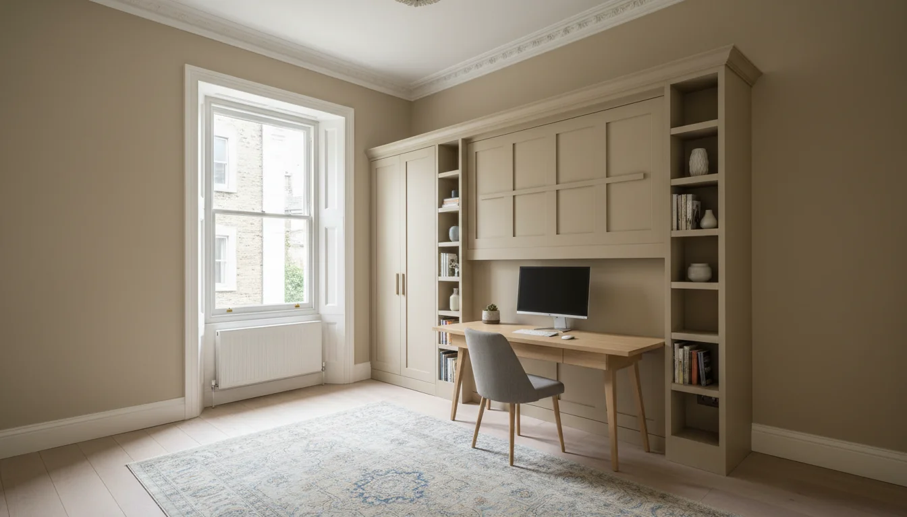
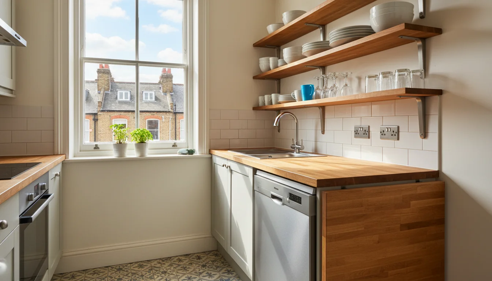
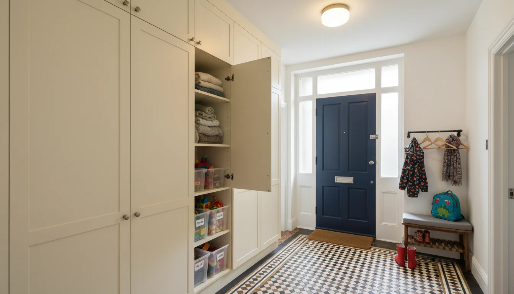

עיצוב דירה לשימוש משפחתי - שתי דירות בדירה אחת
אתם קונים דירה בלונדון. בראש שלכם היא נראית מושלמת - סלון יפה, מטבח מסודר, חדר שינה מפנק. ואז מגיע אוגוסט.
פתאום הדירה הזאת צריכה להכיל שני מבוגרים, שלושה ילדים, ארבע מזוודות, נעלי ספורט שמתרבות מעצמן, וארוחות ערב לשבעה כי כמובן שגם הסבתא באה לכמה ימים. הדירה שעבדה מצוין לסופשים של זוג - פתאום מרגישה כמו מחסן.
זו הבעיה שאף אחד לא חושב עליה ברגע הרכישה. עיצוב דירה לשימוש משפחתי בלונדון צריך תכנון מראש - כי דירה שנייה בלונדון חייבת לעבוד בשני מצבים שונים לגמרי. מצב זוג - אלגנטי, שקט, הכל במקום. ומצב משפחה - כאוס מבוקר, הרבה מיטות, הרבה אוכל, הרבה מקלחות.
אני רואה את זה שוב ושוב. זוגות קונים דירה, מעצבים אותה לפי מה שהם צריכים עכשיו - סופש רומנטי, ארוחת ערב לשניים, מיטה נוחה וזהו. ואז מגיע החופש הראשון עם הילדים ופתאום שואלים: איפה כולם יישנו? למה אין מקום לשים את המזוודות? איך המטבח הזה אמור להאכיל חמישה אנשים שלוש פעמים ביום?
אחרי החופש הראשון הם מתקשרים אלי עם רשימה של שינויים. חלק מהדברים אפשר לתקן בקלות. חלק דורשים שיפוץ. עדיף לחשוב על הכל מההתחלה.
חדרי שינה שמשנים צורה

הדילמה הקלאסית: בדירת שלושה חדרים, מה עושים עם החדר השני והשלישי? בסופש של זוג אתם לא צריכים שני חדרי ילדים ריקים. באוגוסט אתם צריכים שכל ילד יהיה לו מקום.
הפתרון שעובד הכי טוב - מיטות קיר. לא ספות נפתחות שאחרי שנה המנגנון נתקע, אלא מיטות קיר אמיתיות שמתקפלות לתוך ארון (וכן, אפשר לשלב אותן גם בדירות עם אלמנטים ויקטוריאניים - צריך רק לדעת איך). ב- Clei London, למשל, יש מערכות איטלקיות שכשהמיטה מקופלת - יש לכם שולחן עבודה או ספה. כשהמיטה פתוחה - חדר שינה אמיתי עם מזרן רציני, לא מזרן דק של sofa bed.
האפשרויות בפירוט:
חדר שני - חדר עבודה/אורחים. מיטת קיר כפולה שמתקפלת לארון. כשהמיטה סגורה יש שולחן עבודה, כיסא, אולי מדף ספרים. כשמשפחה מגיעה - מורידים את המיטה, מקפלים את הכיסא, ויש חדר שינה לשני ילדים או לסבתא שבאה לכמה ימים. ההשקעה גבוהה יותר ממיטה רגילה, אבל שווה כל שקל כי אתם מקבלים שני חדרים במקום אחד.
חדר שלישי - חדר ילדים שמתקפל. מיטות קומתיים שמתקפלות לקיר. שלושה ילדים, קיר אחד. ביום - חדר משחקים עם רצפה פנויה. בלילה - שלוש מיטות. כשאתם חוזרים ללונדון בלי הילדים - חדר עבודה, חדר אורחים, או סתם חלל פתוח. כדאי להוסיף וילון או מחיצה קלה בין המיטות - ילדים בגילאים שונים צריכים קצת פרטיות.
חדר השינה הראשי - זה החדר היחיד שלא צריך לשנות צורה. מיטה כפולה קבועה, ארון בגדים רציני, תאורה טובה. הנקודה היחידה: ודאו שיש מספיק מקום לעריסת מסע אם יש תינוק, או מזרן נוסף לילד קטן שעדיין לא ישן לבד.
הטעות הגדולה: לשים ספה נפתחת בסלון ולהגיד "הילדים יישנו פה." אף אחד לא ישן טוב על ספה נפתחת, ואתם מאבדים את הסלון כל ערב. והילדים שונאים את זה - הם רוצים חדר שלהם, לא לישון במקום שכולם עוברים דרכו.
מטבח שעובד לשניים ולשמונה

הבריטים בנו את הדירות שלהם עם מטבחים קטנים ונפרדים. חדר אחד למטבח, חדר אחד לסלון, דלת ביניהם. ישראלים לא מבינים את זה - אצלנו המטבח הוא מרכז הבית, ואין קיר שמפריד אותו מהסלון.
לפעמים אפשר לפרק את הקיר - וזה חלק מהותי מכל שיפוץ דירה בלונדון למשפחה ישראלית. לפעמים לא - במיוחד ב- מבנים רשומים שבהם ההגבלות מחמירות. אם צריך אישור תכנון - תתחילו עם זה, כי התהליך בלונדון לוקח זמן.
אבל גם בלי לפרק קירות, מטבח בדירה שנייה צריך לעבוד קשה. שני מצבים:
| מצב משפחה | מצב זוג | |
|---|---|---|
| ארוחת בוקר לחמישה, בישול אמיתי, כלים לשבעה | קפה בבוקר, ארוחה קלה בערב, בקבוק יין | מה קורה |
| מדיח 60 ס"מ, שטח הכנה רחב, כלים ל-8 | מספיק שיהיה נקי ונעים | מה צריך |
| אי נשלף, שולחן מתקפל, אחסון גבוה | משטח עבודה בסיסי | הפתרון |
עוד כמה דברים שנשמעים קטנים אבל עושים הבדל ענק: סט כלי אוכל ל-8, לא ל-4. סירים גדולים שמאחסנים אחד בתוך השני. מספיק כוסות פלסטיק לילדים שלא צריך לשטוף כל שעה. ומקום קבוע לחטיפים שהילדים יכולים להגיע אליו לבד בלי לשאול כל חמש דקות. זה לא עיצוב - זה שפיות.
אחסון - הנושא שאף אחד לא חושב עליו מספיק מוקדם

דירה שנייה צריכה אחסון אחר מדירה ראשית. זה לא כמו בית שגרים בו - לא מצטברים דברים בהדרגה. יש דברים שגרים שם קבוע - מצעים, מגבות, כלי מטבח, מוצרי ניקיון. ויש דברים שבאים והולכים - צעצועים, ביגוד עונתי, ציוד לפארק, ספרים לילדים, מעילי חורף שלא צריך באוגוסט ומעילי גשם שצריך תמיד.
הבעיה: דירות לונדוניות לא נבנו עם הרבה אחסון. אין מחסנים. לפעמים אין אפילו ארון מובנה בחדר השינה - רק wardrobe עומד בפינה. מי שמגיע מדירה ישראלית עם ארונות קיר בכל חדר מרגיש את החוסר מיד.
מה שעובד:
- ארונות מובנים לכל גובה הקיר בחדרי השינה. מנצלים כל סנטימטר.
- ספסלי אחסון במסדרון ובכניסה - מקום לנעליים, מעילים, תיקים.
- מתחת למיטות - מגירות או ארגזים. זה שטח אחסון שאף אחד לא רואה.
- ארון אחד שמוקדש ל"דברים של הילדים" - צעצועים, משחקי קופסה, ציוד ציור. שולפים את הארגזים כשהמשפחה מגיעה, מחזירים הכול פנימה כשנוסעים.
הכלל: כל דבר שנשאר בדירה צריך מקום קבוע, סגור, לא על השיש ולא על הרצפה. דירה שנייה שלא מתגוררים בה רוב השנה חייבת להיראות מוכנה תוך שעה מהרגע שנכנסים בדלת.
[!TIP] תעשו רשימה של מה נשאר בדירה ומה מביאים כל פעם. רשימה מודפסת על דלת הארון, עם מה שיש בפנים ומה חסר. אחרי כמה טיסות שבהן שכחתם מגבות או מצעים לילד השלישי - תבינו למה זה שווה.
חדרי רחצה - הפער הגדול
זה אחד ההבדלים הכי גדולים בין מה שישראלים רגילים אליו לבין מה שלונדון מציעה.
| לונדון | ישראל | |
|---|---|---|
| דירת 3 חדרים - לפעמים חדר רחצה אחד בלבד | דירת 4 חדרים - לפחות 2 חדרי רחצה + שירותים נפרדים | חדרי רחצה |
| אמבטיה עם מקלחון מעל | מקלחון נפרד, אמבטיה נפרדת | מה רגילים אליו |
להוסיף חדר רחצה בדירה לונדונית זה אפשרי אבל לא פשוט. צריך אינסטלציה, ניקוז, לפעמים אישורי תכנון, ותמיד - קבלן שמבין מה הוא עושה. העלויות יכולות להפתיע.
כמה פתרונות מציאותיים:
- חדר רחצה צמוד (en-suite) לחדר השינה הראשי. גם בדירות קטנות לפעמים אפשר לקחת פינה מהחדר ולבנות מקלחון. זה דורש אינסטלטור טוב ולפעמים משאבת ניקוז (macerator) אם אי אפשר לחבר ישירות לצנרת הקיימת.
- שירותים נפרדים. לפעמים יש toilet קטן שאפשר לשדרג, או מקום מתחת למדרגות או בפינת מסדרון להוסיף אחד. גם WC קטן עם כיור בלבד עושה הבדל ענק למשפחה.
- אם יש רק חדר רחצה אחד - ודאו שהוא עובד ביעילות. אמבטיה עם מקלחון מעל, ארגון טוב, מספיק וווים ומדפים. ותוסיפו ארון אחסון לכל בני המשפחה - כל אחד מדף, כל אחד מגבת בצבע אחר. כשיש חמישה אנשים על חדר רחצה אחד, ארגון הוא לא אופציה.
אל תתפשרו על הנקודה הזאת. בסופש של זוג - חדר רחצה אחד מספיק. במשפחה של חמישה לשלושה שבועות - זה מתכון לעצבים. תשאלו כל משפחה ישראלית שחזרה מחופשה בדירה עם חדר רחצה אחד - זה הדבר הראשון שהם רוצים לשנות.
הסלון שעובד בשני המצבים
הסלון הוא המקום שבו ההבדל בין שני המצבים הכי מורגש. ובדירה לונדונית ממוצעת הסלון לא גדול - אז כל החלטה על רהיט משפיעה.
מצב זוג: ספה נוחה, תאורה חמה, שקט. אולי ספר, אולי סרט. הכל במקום. הדירה מרגישה כמו מלון בוטיק.
מצב משפחה: אותו חלל צריך להכיל ערב משפחתי עם ילדים שרוצים לשחק, אורחים שבאו לביקור, וארוחת ערב לשבעה סביב שולחן שלא היה שם אתמול. הדירה צריכה להרגיש כמו בית.
מה שעובד:
- שולחן אוכל שמתארך. שולחן ל-4 שנפתח ל-8. זה לא פתרון חדש אבל בדירה שנייה הוא קריטי. כשאתם לבד - שולחן קטן ואלגנטי. כשמגיעה משפחה - שולחן ארוחת שישי.
- שטיח שאפשר לגלגל. בסופש של זוג - שטיח יפה שמחמם את הסלון. כשהילדים מגיעים - מגלגלים אותו, הרצפה קלה לניקוי. בישראל עובדים עם פורצלן ולא חושבים על זה, אבל בלונדון הרצפה קרה - שטיח הוא לא רק עיצוב, הוא חימום.
- פופים או כריות רצפה שמתאחסנים. ילדים אוהבים לשבת על הרצפה. מבוגרים לא. פופים שנכנסים לארון פותרים את זה.
- תאורה שמשתנה. במצב זוג - תאורה עמומה וחמה. במצב משפחה - אור חזק ותפקודי. כדאי להשקיע בדימרים ובנקודות תאורה נפרדות. זה לא יקר ומשנה לחלוטין את האווירה.
ועוד דבר: הספה. אל תקנו ספה שצריכה חמש דקות ניקוי אחרי כל ישיבה. עם ילדים, אתם צריכים ריפוד שאפשר לנקות בקלות או כיסויים שנכנסים למכונת כביסה. ספת קטיפה לבנה בדירה שמשפחה עם שלושה ילדים מגיעה אליה באוגוסט - זה ניסוי שלא צריך לעשות.
מה קורה כשאף אחד לא בדירה
דירה שנייה ריקה רוב השנה. וזה יוצר בעיות שלא חושבים עליהן כשמעצבים.
לונדון לחה. דירה סגורה ללא אוורור מפתחת עובש - על הקירות, בארונות, על רהיטים. צריך מערכת אוורור או לפחות טיימרים על חלונות ומערכת חימום שרצה על מינימום גם כשאף אחד לא שם.
אבטחה - דירה שנראית ריקה מושכת תשומת לב. טיימרים על תאורה, שכנים שיודעים שאתם לא שם, אולי מצלמות.
[!WARNING] ביטוח לדירה שלא מאוכלסת רוב השנה שונה מביטוח רגיל. אם לא תדווחו לחברת הביטוח שהדירה ריקה חודשים ברציפות, הפוליסה עלולה לא לכסות אתכם.
ואולי הכי חשוב - הפעלה מהירה. כשאתם נוחתים ב- Heathrow עם שלושה ילדים עייפים אחרי טיסה של חמש שעות, אתם רוצים להגיע לדירה שמוכנה. מצעים נקיים על כל המיטות, חלב במקרר, חימום דולק, מים חמים שעובדים. לא לגלות שהדוד לא נדלק או שיש עובש בארון.
ניהול מרחוק לא נגמר כשהשיפוץ נגמר - צריך מישהו בלונדון שדואג לדירה בין הביקורים. מישהו שנכנס פעם בחודש, מאוורר, בודק שהכל תקין, ומכין את הדירה יום לפני שאתם מגיעים. זה שירות שנשמע מותרות, אבל אחרי שמגיעים לדירה סגורה עם ריח עובש ומקרר ריק - מבינים שזה הכרח.
הטעויות שישראלים עושים שוב ושוב
לעצב רק למצב אחד. או שמעצבים דירת זוג ומתפלאים שהילדים לא מסתדרים, או שמעצבים דירת ילדים ומרגישים שגרים במעון יום כשבאים לבד.
לקנות רהיטים לפני שחושבים על תכנון. ספה ענקית שנראתה מושלמת באולם תצוגה תופסת חצי סלון בדירה לונדונית. שולחן אוכל ל-6 שקניתם ב- Roche Bobois לא נכנס בפתח המדרגות של הבניין. קודם תכנון, אחר כך מדידות, ואז קניות.
להתעלם מהמטבח. "נאכל בחוץ." לא עם שלושה ילדים לשלושה שבועות בלונדון. מסעדות בלונדון יקרות, ילדים לא תמיד אוכלים מה שמגישים להם, וארוחות בחוץ כל יום זו דרך מהירה לסיים את תקציב החופשה. המטבח צריך לעבוד.
לחסוך על אחסון. "אין לנו הרבה דברים שם." נכון, עד שמתחילים להצטבר נעליים, מעילים, צעצועים, ומשחקי חוף.
לא לחשוב על השכונה מנקודת מבט משפחתית. דירה מעוצבת מושלמת בשכונה בלי פארק קרוב ובלי סופרמרקט נגיש - לא תעבוד למשפחה.
התכנון הנכון מתחיל לפני הרכישה. כבר בשלב בדיקת הנכס כדאי לחשוב איך הדירה תעבוד למשפחה, לא רק לזוג. ואם כבר קניתם - עדיף לעשות את השינויים עכשיו מאשר אחרי הקיץ הראשון. כי אחרי הקיץ הראשון כבר תדעו בדיוק מה חסר - ותשלמו יותר על שיפוץ שני.